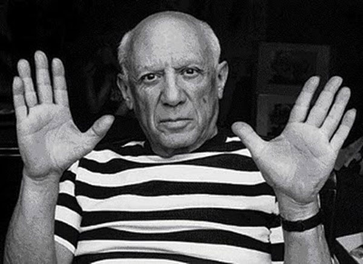

ART
GALLERY
BLOGS
Figura excepcional como artista y como hombre, Picasso fue protagonista y creador inimitable de las diversas corrientes que revolucionaron las artes plásticas del siglo XX, desde el cubismo hasta la escultura neofigurativa, del grabado o el aguafuerte a la cerámica artesanal o a la escenografía para ballets. Su obra inmensa en número, en variedad y en talento, se extiende a lo largo de más de setenta y cinco años de actividad creadora, que el pintor compaginó sabiamente con el amor, la política, la amistad y un exultante y contagioso goce de la vida.
 PICASSO
PICASSO